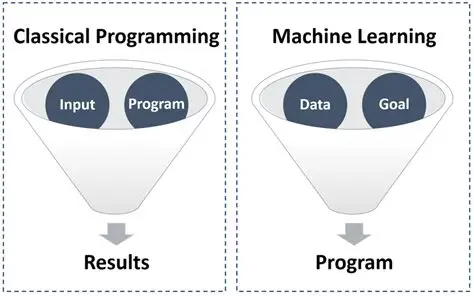
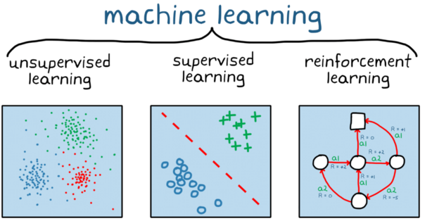
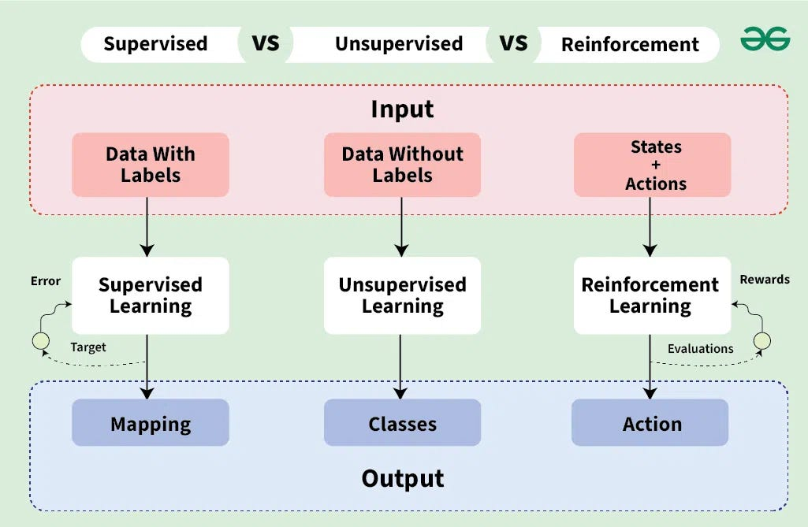

10.1016/j.bja.2025.07.085
從寫程式到機器學習：思維的典範轉移 From Programming to ML: The Paradigm Shift
理解人工寫死規則（Rule-Based）與演算法自主學習（Machine Learning）的本質差異。 Understanding the fundamental difference between handcrafted rules and learned representations.
尋寶路線比喻 (Treasure Hunt) Treasure Hunt Metaphor
Concept- 傳統寫程式：工程師鋪設好一條固定石板步道（
if-else），電腦照著走到達寶藏。 - 機器學習：只給起點（Data）與寶藏（Goal），中間路線是個大問號（？），演算法必須自己透過試錯學出最佳路線！
經典漏斗圖架構 (Paradigm Shift) Classic Funnel Paradigm Shift
Formulation
機器學習的三大主流學習方式 Main Machine Learning Paradigms
監督式學習、非監督式學習與強化學習之總論架構對照與精選實例。 Supervised, Unsupervised, and Reinforcement Learning with Core Benchmarks.
流程架構對比 (Input ➔ Mechanism ➔ Output) Pipeline Architecture Comparison
TheAIOps
任務形態手繪直覺對比 (Clustering / Boundary / Policy) Handdrawn Intuitive Task Comparison
Medium
給題目也給標準答案 (Data with Labels) Learning with Labeled Ground Truth
本篇論文採用運作機制： 同時給予輸入題目 X 與標準答案 Y。模型猜錯時計算誤差（Error），透過反向傳播修正權重，在特徵空間中劃出分類決策邊界（Decision Boundary）或回歸擬合線。
- 本論文模型 (BJA 2025 二元分類)：輸入 12 導程 ECG 原始連續波形 + 34 項病歷 ➔ 預測術後是否發生心肌梗塞 (MI)、院內死亡或複合 MACE (1/0)
無標準答案，自行探索資料聚集規律 (Data without Labels) Unsupervised Pattern Discovery & Clustering
Pattern Discovery運作機制： 只有題目 X，沒有任何標籤 Y。演算法根據高維特徵之間的幾何距離與密度分佈，自主尋找資料的隱在群集（Clusters）或降低維度（Dimensionality Reduction）。
- 串流平台推薦系統 (Spotify / Netflix)：透過特徵降維與聚類，自動推薦曲風相近的歌曲與電影
在環境中試錯，由獎懲反饋學會最佳決策 (States + Actions) Trial & Error with Reward Feedback
Dynamic Policy運作機制： 智能體（Agent）在環境中根據當前狀態（State）採取動作（Action）。達成良好目標給予獎勵（Reward +1），造成失誤給予懲罰（Penalty -1），學會最大化累積獎勵的最佳連續動態策略。
- AlphaGo 圍棋與西洋棋 AI：自我對弈數百萬盤，根據棋局勝負 (Win/Loss Reward) 學會超越人類頂尖棋力
- AI 玩電玩遊戲通關 (Atari / Super Mario / Dota 2)：透過遊戲得分與通關反饋自主學會高難度操作
傳統 ML 痛點 ➔ 深度學習定義 ➔ 1D-CNN 原理 Traditional ML Bottleneck ➔ DL & 1D-CNN Mechanics
為什麼我們需要深度學習？透過皮卡丘 vs. CVC 梗圖看特徵工程的盲點，與 1D-CNN 時間軸滑動窗口。 Overcoming handcrafted feature engineering via end-to-end representation learning and 1D-CNN.
趣味互動：我是誰？(Who's that?) Interactive Reveal: Who's that?
題目：我是誰？ Question: Who's that?概念反思： 若只依賴人類手動定義的粗糙外框特徵（像只看黑影量尺寸），就容易被表面特徵蒙蔽，漏掉內部真正複雜的幾何與病理結構！
DL 表徵學習與 1D-CNN 機制 DL Representation & 1D-CNN
Mechanism1. 深度學習 (Deep Learning) 定義 1. Deep Learning Definition
利用多層神經網絡直接從原始資料（12 × 5000 原始電壓）進行端到端表徵學習（End-to-End Representation Learning），徹底擺脫手動測量 PR/QTc 的人為遺漏。
2. 1D-CNN 時間軸滑動窗口抽取 2. 1D-CNN Sliding Window
本論文模型架構與選用理由 Multimodal Architecture & Rationale
1D-ResNet 殘差直通旁路 + MLP 病歷專家 + 晚期特徵拼接融合與全流程反向傳播。 1D-ResNet + MLP with Late Fusion and End-to-End Backpropagation.
雙支線多模態晚期融合 (Late Fusion Pipeline) Dual-Branch Late Fusion Pipeline
Multimodal Deep Learning深入探討：Why ResNet? (直通旁路原理) Deep Dive: Why ResNet? (Shortcut Connection)
傳統深層網路（30~50 層）在反向傳播時梯度連續相乘小數會衰減為 0（梯度消失）。
保底機制： 即使深層神經元學不出新特徵（F(x) = 0），上一層特徵也能無損傳遞（y = x）；反向傳播多了一個保底的 +1，梯度暢通無阻回傳！
深入探討：Why MLP over Tree Models? Deep Dive: Why MLP over Tree Models?
樹模型（XGBoost）是「階梯斷崖式硬切分」，內部不可微分，誤差訊號無法穿透回傳。
平滑旋鈕與連鎖律 (Chain Rule)： MLP 與 ResNet 均由連續可微的平滑旋鈕組成。猜錯時，反向傳播算法在 0.001 秒內將責任帳單倒流回傳，同時精確微調 500 萬個波形旋鈕與病歷旋鈕！
破解黑盒子：反事實可解釋性 (Counterfactual XAI) Explainability: Counterfactual Framework & Critique
反事實找碴生成機制與三大電生理病理發現。 Difference map electrophysiological findings and counterfactual framework.
反事實核心邏輯 (找碴修復法) Counterfactual Perturbation Logic
XAI Method「這張被判為 88% 高危的心電圖，波形要做怎樣的『最小良性微調』，AI 就會改判為低風險（<15%）？」
Difference Map = |真實波形 - 反事實波形|論文三大電生理發現 (Validation) 3 Electrophysiological Findings
Clinically Verified
質疑：若高風險純粹來自「緊急大手術與洗腎」，演算法強迫只修復心電圖，會發生什麼事？
當病歷端（MLP）產生巨大風險時，演算法為了將總風險強行壓低，可能會在心電圖上產生「過度代償修改（Forced
Over-compensation）」，導致殘差熱圖把正常雜訊誤標為嚴重病灶。未來研究應先透過 SHAP 拆解責任權重，再動態決定反事實標的，避免「病歷生病、卻硬在心電圖找藉口」！
成果對比與麻醉臨床決策價值 Results Comparison & Clinical Takeaways
AUROC 效能全面超越 RCRI，與圍術期麻醉實務落地建議。 Comprehensive AUROC comparison vs. RCRI and perioperative practice pathways.
AUROC Performance Comparison
P < 0.001| Clinical End Point | Traditional RCRI | ECG-only DL | Multimodal Fusion |
|---|---|---|---|
| Postoperative MI | 0.652 | 0.812 | 0.858 |
| In-hospital Mortality | 0.724 | 0.846 | 0.899 |
| Composite MACE | 0.681 | 0.795 | 0.835 |
麻醉臨床決策落地指引 (3 階段) 3-Stage Perioperative Pathways
Practice Guide晨會核心總結 (Take-Home Messages) Take-Home Messages & Summary
回歸臨床實務：從模型架構、電生理可解釋性到圍術期麻醉決策之核心關鍵。 Connecting deep learning representations and XAI to actionable perioperative pathways.
📊 預測力突破：從粗略 RCRI 到多模態深度學習 📊 Paradigm Shift in Risk Stratification
傳統 RCRI 僅 6 項粗略二元指標（AUROC 0.652）；本文結合 10 秒 12 導程 ECG 原始連續電壓（60,000 點）＋ 34 項結構化病歷，將術後心肌梗塞預測力大幅提升至 AUROC 0.858，院內死亡率達 0.899！ Moving beyond handcrafted binary scores (RCRI AUROC 0.652) by leveraging 60,000 raw ECG voltage points combined with 34 clinical variables, achieving superior discrimination (AUROC 0.858 for postop MI).
🧩 雙塔晚期融合 (Late Fusion)：專科分工與端到端連續可微 🧩 Dual-Branch Late Fusion Architecture
波形端利用 1D-ResNet 直通旁路保底 克服深層梯度消失；病歷端透過 連續可微 MLP 提取非線性共病加乘。兩路精華晚期拼接（128 + 32 = 160 維），反向傳播在毫秒內同步微調雙支線！ 1D-ResNet with shortcut connections prevents gradient vanishing on waveforms, while MLP captures nonlinear clinical interactions. Late feature fusion ensures seamless end-to-end backpropagation.
🔍 反事實可解釋性 (Counterfactual XAI) 與批判思維 🔍 Actionable XAI & Critical Appraisal
透過「虛擬修復波形」定位出 QRS 增寬、低電位與 ST 段壓低 三大關鍵致病病灶，具備臨床可介入性（Actionable）。同時具備批判思考：警惕病歷高危引起的「心電圖過度代償」歸因偏差！ Counterfactual difference maps pinpointed prolonged QRS, low voltage, and ST depression as primary targets. Critical takeaway: avoid forced ECG over-compensation when systemic surgical risks dominate.
💉 麻醉圍術期臨床落地指引 (Actionable Pathways) 💉 3-Stage Perioperative Action Pathways
術前：AI 預警高危病患主動照會心臟科或加排心超 (TTE)；術中：早期建立 A-line，嚴格維持 MAP ≥ 65 mmHg；術後：常規 48~72h 追蹤 hs-Troponin 早期攔截 MINS。 Preop proactive cardiology/echo referrals; Intraop early A-line arterial line placement targeting MAP >= 65 mmHg; Postop routine 48-72h hs-Troponin surveillance to capture subclinical MINS early.